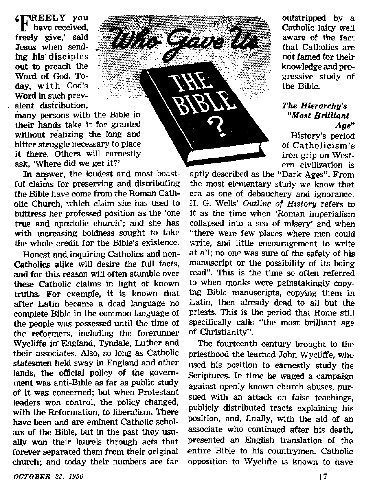
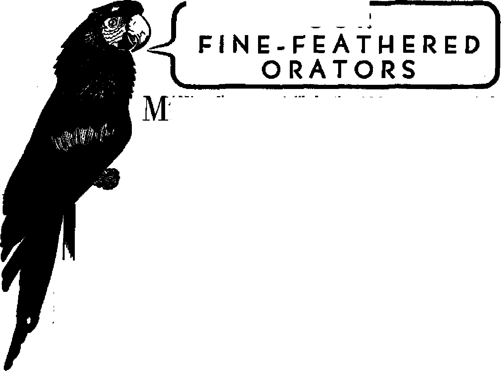
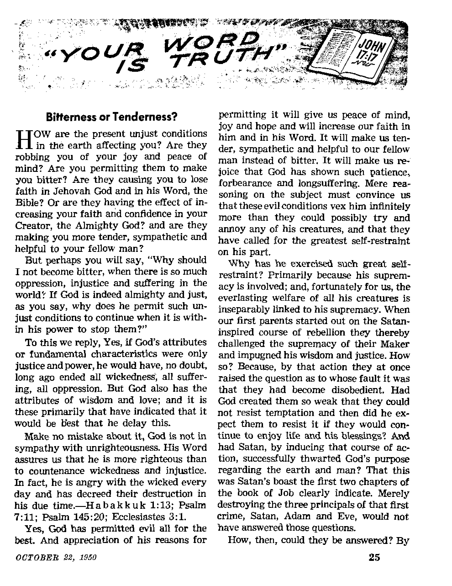

STORY OF LABOR UNIONS
Review of Labor’s history, gains and losses
Weather Forecast: Fair and Warmer
Weatherwise scientists now agree that the earth is warming up . ■ —
The Changing World of Children
Grandmother reared her offspring with common sense; now parents must cope with child psychologists
Who Gave Us the Bible?
THE MISSION OF T.HIS JOURNAL
New* sources that are able to keep you awoke to the vita! Inuce of our time* must be unfettered by censorship and selfish interests. ‘ ‘Awake I** has no fetters. It recognizes facts, faces facts, is free to publish facts. It Is not bound by political ambitions or obligations; It is unhampered by advertisers whose toes must not be trodden on; it is unprejudiced by traditional creeds. This journal keeps itself free that it may speak freely to you. But it does not abuse its freedom. It maintains integrity to truth.
"Awake 1” uses the regular news channels, but is not dependent on them. Its own correspondents are on all continents, in scores of nations, From the four corners of the earth their uncensored, on*the-scenes reports come to you through these columns. This journal’s viewpoint la not narrow, but is international. It is read in many nations; in many languages, by persons of all ages. Through its pages many fields of knowledge pass in review—government, commerce, religion, history, geographv, science, social conditions, natural wonders—why, its cover* age is as broad as the earth and as high as the heavens.
“Awake!” pledges itself to righteous principles, to exposing hidden foes and subtle dangers, io championing freedom for all, to comforting mourners apd strengthening those disheartened by the failures of a delinquent world, reflecting sure hope for the establishment of a righteous New World.
Get acquainted with '‘Awake 1” Keep awake by reading “Awake!”
J’JRUHBTID fiS.kl I MON Tn LT Ri WATCHTOWER BIBER AMJ TRACT SOCIETY, INC
U7 Aduna Smet V H. Know, JVe*tds»(
Prlntlrg th l« i»»ua‘ 110,000
Broqklyu 1, N. Y„ U. fl. A.. Chawt fluirm, Minatory
Five c«n1« a copy
LwfBtfi* k whkh tNt wtuiv* I* MaJuquUlJF—<;**«, kteltP
Ij—AfriiMM- fcw5, Qrnk, P*rtk<mrd
»»vdMd IkrU^iQ.
Munca, VS., LIT Afeni 04 . arakljD h BuT.
A* Mil. Il B9 , BvrJAM, N.0.W
CatJi, 40 JfFj Ar* , 5. On Link
E*Mu*i. 34 Otrn Terrier L«6», W 2
11 fli
9k
Bi
frjnd «• v*i'«r it BrwCjfli,
*Mi4tt*ii*M xhwiia be *0)1 u> m yrjr rem-fy ?& xlit «r fMMn rr
utt if nrtatj Irail'uncr* ara ^crated «; IrtMba from 0MPtrl«i v:i«rt co office k bciM, ty InttmrJrcd ikn<y onter nir. BtAttnrtlvn fMm id differt raumfi *?? twr, xtiiwj >2 fcxij rarer, cy ff*tfck *f Mpkatl«N fwfri mml Mank) Is kfUt >«st tws lauM tofav wterlpdott n-pirn CUkh at adtoaa »teti *r»: to rar oc« ■uy te «%*«r«d mkt't* an* aocrb ^xi yw dM » weH m hr adcna.
. Ad ar Uirdt 3, PrlntM to IL ij.
|
The Story cf Labor. Unions |
3 |
Who Gave Us the Bible? |
17 |
|
Birth cf Labor Unions |
The Word of Popes and Councils |
-.8 | |
|
Labor's Gains and Losses |
7 |
Horse and Lion Trade Diets |
20 |
|
Women In the Driver’s Seat |
8 |
Japan Adds Edison to Its Demon Gods |
20 |
|
What Do You Say When You Sneeze? |
8 |
Our Fine-Feathered Orators |
21 |
|
Weather Forecast; Fair and Warmer |
9 |
Scientific Surprises |
24 |
|
Injections May Cause Paralysis |
12 |
“Your Won! Is Truth'’ | |
|
The Changing World of Children |
13 |
Bitterness or Tenderness? |
25 |
|
Common Sense vs. Nonsense |
15 |
Violent Outbursts in Bolivia |
27 |
|
The Foremost Training |
16 |
Watching the World |
29 |
Volume XXXI Brooklyn, N. Y., October 22, 1950 Number 20
U A THREEFOLD cord is not quickly
XI broken.” That truth, uttered by wise King Solomon nearly three thousand years ago, well states the principle underlying the efforts of men to organize labor unions. Of course, if all men followed the Scriptural injunction: ‘You must love your neighoor as you do yourself/ there would be no need for men to organize unions.
"As an individual/’ states the Encyclopedia Americana^ “the worker is helpless when facing the employer in search of a job or with a grievance to redress. Should the employer decide, under the stress of competition, to reduce his wages, to speed up production, or even to discharge him, the worker, if unorganized, must submit. The average worker rarely escapes from the economic and social [environment] in which he was bom . . . Long experience, therefore, taught the workers the necessity of combination in labor and trade unions in order to bargain with their employers on equal terms/’
Modern labor organizers are wont to portray Moses as a great labor leader who engineered a successful strike against Pharaoh & Company. But the Scriptural account allows for no such interpretation of those events. Wages, shorter hours and improved working conditions were not involved. The facts are that the Israelites were enslaved and they cried to God for deliverance and he set them free by a
series of miracles.—See Exodus, chapters 1 to 12.
That there was much such oppression in ancient civilizations history always clearly shows. Nimrod, proud and wanton hunter and builder of great cities, was doubtless one of the first to ^exploit labor on a large scale. From the Bible account it appears that oppression of workers was a crying evil in Judah shortly before its fall in 607 B.C. However, no record has come down to us of those oppressed workers organizing to improve their lot
Guilds—First Unions
It seems that the first workmen’s organizations were formed in Rome about the sixth or seventh century B.C. According to the historian Plutarch, Numa, ancient legendary king of Rome, organized the workmen of his country into “colleges”, according to their respective crafts. History also records the organizing of workmen in Greece from the fourth to the second centuries B.C. The Roman “colleges” or craft guilds seem to have continued in some form or another until the fifth century A.D.
The sixth century saw the forming of free workmen’s guilds in Italy, first mentioned being the soapmaker’s craft of Naples. The need and value of guilds soon became apparent in other Countries also, becoming most numerous and powerful in
Germany and Great Britain. The twelfth and thirteenth centuries saw great activity and progress in the formation of guilds, their incorporating regulations governing the training of apprentices, the requirements of journeymen and of the masters, etc.
The craft guilds of some countries, such as Germany, became very monopolistic and cared little or nothing about the welfare of other workers or of the consumer. Also, they went in for specialization to a degree that was fantastic. For instance, a silversmith was not permitted to fasten a gold ornament on a piece of silver jewelry. And, especially until the Reformation, the Roman Catholic religion played a very prominent role, each guild having its own patron saint, chapel or altar and religious banner. Violation of religious fasts or holidays was severely punished. Needless to say, there was no place in these guilds for the Jews.
In Great Britain the first craft guild was organized in 1164, that of the weavers, although religious and other guilds had been formed several centuries before. These craft guilds were mostly interested in politics and featured mutual benefit provisions. They differed radically from the guilds on the continent in that they were not .monopolistic. Among other guilds of that period were the merchant guilds, which were something like the chambers of commerce of today.
In other countries the workers were less fortunately situated. In France, for instance, the government sold the guild privileges, and, as a result, the lot of the artisan was most pitiable. The Revolution put an end to this form of oppression in that country. On the whole, the guilds were marked by a shortsighted selfishness and were a decided obstacle to progress. Opposition to them was at first based on their political activity, as they had become quite a power in local governments; but their increasing monopolistic features doomed them, the edicts of the various countries against them in the eighteenth and nineteenth centuries giving the death blows.
Birth of Labor Unions
The era that marked the decline and the end of the guilds also saw the birth of labor unionism. The year 1789 saw the forming of the first craft or trade union in the United States, and 1791, the first strike, that of some carpenters who struck for shorter hours and against a reduction in wages.
The goals of those labor organizations were a sad commentary on the blind selfishness of the employer class of their day. Typical of the labor legislation of that time was a law passed in Great Britain in the first decade of the nineteenth century which limited the factory working hours of children under nine years to twelve hours a day!
The organizing of these unions presented quite an uphill fight from a legal standpoint. The law allowed men to form combinations for the purpose of lowering wages but it did not permit workers to combine for the purpose of securing higher wages. That is, as soon as they struck, their union became illegal and the men were fined and imprisoned for “conspiracy to raise wages”.
A case in point occurred in New York in 1836. Certain manufacturers combined and agreed not to meet the demands of their striking employees. They further agreed not to employ any worker who was a member of a Trades Union Society or any other society whose object was to influence wages. The grand jury refused to indict the employers for conspiracy, but did fine the striking tailors involved from $50 to $150 each.
Gradually, however, the lawmakers saw the light, and the right of men to quit work to benefit themselves was recognized by law, Massachusetts being the first to do so, in 1842. A few years later New Hampshire passed the first law limiting the working day to ten hours, and not long thereafter began agitation for an eight-hour day.
As industries increased in size and competition became more keen prices were lowered, and with lower prices went lower wages. More and more workers felt the need of organizing, and so we find that by 1864 local union membership neared the quarter-million mark, while national unions soon exceeded the half-million mark. During that decade more than thirty national unions were formed, most of which were short-lived.
During this time the “Molly Maguires” were organized in the coal industry, at one time having 6,000 units, one in every coal center. Concerning this society of Irish Catholic coal miners the Encyclopaedia Britannica^ among other things, states: “In the mining districts of Pennsylvania, the organization fell under the control of a lawless element, which created the inner order of the 'Molly Maguires’, with the object, it app&ars, of intimidating the Welsh, English and German miners and ridding the region of mine superintendents, bosses and police who should in any way make themselves objectionable to the members of the order.” An Irish Catholic Pinkerton detective joined the society, “The evidence he secured led to the arrest, conviction and execution or imprisonment of many of the members during the years of 1876 and 1877, and, subsequently, the outrages ceased and the Society was disbanded.” During their heyday they had the whole region in terror.
The next striking phenomenon on the labor horizon, and as far removed in principle and action from the “Molly Maguires” as east is from west, was the organization, known as the “Knights of Labor”. Organized in 1869, it reached its peak of some 700,000 in 1886 and helped give the decade of the 1880’s “one of the most dramatic and* significant episodes in the history of American labor”. It set out to organize all laborers, regardless of craft, and interested itself not only in hours and wages but also in cooperative schemes, in socialism, in plans for reorganizing the country’s banking and currency systems. It even advocated the suppression of the liquor traffic. But the “Knights” bit off more than they could cheiV and were soon to be replaced as the leading national labor union by the up-and-coming rival American Federation of Labor,
Instead of interesting itself in politics and in economic and moral reforms the A, F. of L. concerned itself with craft unionism, collective bargaining and improvement in working conditions. It was organized in 1886 and its first president was Samuel Gompers. Its original constitution was taken almost word for word from that used by the British trade unions. Being rather loosely organized, the various craft unions would often be involved in bitter jurisdictional disputes.
About twenty-five years later, in 1905, the I.W.W., Industrial Workers of the World, nicknamed “I Won’t Work”, was organized. Among its original founders was Eugene Debs, many times Socialist candidate for president of the United States. According to the I.W.W,, “The working class and the employing class have nothing in common. Between these two classes a struggle must go on until the workers of the world organize as a class, take possession of the earth and the machinery of production and abolish the wage system.”
At one time the I.W.W. was quite effective, all out of proportion to its size. And while its main strength was with the western miners, it won its most notable victory on behalf of some 30,000 non-English-speaking textile workers in New England. Because of the radical ideas of the organization its organizers suffered much from both the police and from mob action, some 5,000 of them being imprisoned one or more times and several of them murdered. Today the organization is of no consequence.
While the radical ideas of the I.W.W. made comparatively little progress among the laborers as a B’hole, there was a growing number of labor leaders who felt that the A, F, of L. was too slow in organizing the industrial areas and that its method of organizing men according to trade or craft was not the best for that purpose. This ran counter to the ideas of the leaders of the A. F. of L.f and, compromise failing, resulted in a split and the forming of the C.I.O., the Committee (now Congress) of Industrial Organizations, in 1935, with John L. Lewis as its first president. (Since then Lewis quit the C.I.O., and at present the coal miners’ union, of which he is president, is not associated with either the A.F.nfL. nr the CtLO.,1 At. the time of the split the A. F. of L. had between three and four million members. Within a few years of this division both A. F. of L. and C.I.O. had that many.
Technically, the A. F. of L. unions are organized according to trade or craft and are known as “vertical unions", whereas the C.I.O. organizes its unions on an industry or plant basis and they are called "horizontal unions’’. To illustrate: according to the A. F; of L., the compositors, the pressmen, the truck drivers, the engineers in a printing plant would each belong to their particular trade union. On the other hand the C.J.O. or horizontal union would have al] the men and women working in one plant belonging to the same union regardless of what kind of work they did. These distinctions today, however, are most general, there being craft unions in the C.I.O. and plant unions in the A. F. of L., the tendency being toward generalization.
There fs another form of union activity in the United States, that of the Roman Catholic variety, the ACTU—Association of Catholic Trade Unionists. It has served as a spearhead for fifth column Roman Catholic Action in labor and has succeeded in dominating the C.I.O. (For details of Catholic Action in labor see Awake.' May 8, 1950.)
Modern legislation has been most favorable to labor organization, the N.L.R.A., the National Labor Relations Act, being largely instrumental in the success of the organizing activities of the C.I.O. This law outlawed "yellow dog contracts’* whereby an employee was made to sign a statement that he would not join a union, and gave unions a legal standing such as they had never before enjoyed. Some felt, however, that it had gone too far, or that labor was abusing its advantages, and, as a result, the Taft-Hartley labor act was made and passed. Many consider the opposition to this bill more prejudiced than reasoned.
During 1949 labor in the U. S. counted heavily on the Truman victory to put across its program of repeal of the Taft-Hartley labor act and to enact civil rights legislation. An independent congress, however, had other ideas on the matter, and now labor is concentrating on defeating the legislators responsible.
During the year 1949 rnore than 55 million working days were Jost by the workers because of strikes. This was second only to the all-time high of 116 million working days lost in 1946, the first postwar year. The unemployment situation, which worsened during the year, suddenly improved in 1950 as the U. S. took action in Korea. At present there are reports of a labor supply shortage.
In the latter part of 1949 the C.I.O., at its annual convention in Cleveland, Ohio, ousted the liberal unions, accusing them of being communist controlled or sympathetic to communism. In May 1950 the newly formed C.I.O. electrical union gained control of the majority of the locals of the largest of these ousted unions, the U.E., but not without the most bitter injection of religion into the issue by the priests and bishops of the Roman Catholic Church. Those voting fpr the liberal unions were told they had committed a/‘mortal sin”.
Outstanding victories for labor included the winning of the coal strike, the steel strike and the signing of a contract with General Motors, which contained a generous pension -plan, termed by the press (Life) “the most important contract an industrial union had won since the C.I.O. first signed U. S. Steel in 1937”. A notable gain for labor was the voluntary raise granted the 120,000 workers of the Chrysler Corporation on August 25,1950, which, according to the New York Times, caused more excitement in the auto manufacturing circles than any development since Ford’s $5-a-day minimum pay policy in January 1914. This was in striking contrast to the 100-day Chrysler strike, which ended in bitterness on both sides on May 4, 1950.
According to the 1950 World Almanac, 16 million workers belong to unions in the United States: 8 million to the A. F. of L., with William Green as their president; 6 million to the C.I.O., with Phillip Murray as their president; and 2 million to independent unions. These figures are generally considered by those “in the know” as somewhat exaggerated.
As for other parts of the world: Until Hitler destroyed them in 1933, the German unions were considered the most powerful and best organized unions in the world. In Great Britain organized labor continues to hold on to the reins of government, though rather precariously at present. In Australia it lost that hold during the past year. In Italy the big bad wolf of communism is making very strong inroads in organised labor in spite of the professed Catholic religion of its population; to a lesser degree this is also the case in France. Consistently, labor has fared better in Protestant countries, and there too the threat of communism has been negligible.
While labor unions have helped the worker in many ways, they are not an unmixed good. Corruption in them matches that found in politics, if such is possible. And what men need is far more than labor unions would ever be able to give them. For, regardless of their power, their good intentions, regardless of their complexion, whether radical, communist, socialist, democratic or religious (Catholic), they have not been nor will they be able to stop wars, depressions, crime, nor will they be able to end disease and death. God’s kingdom alone can and will accomplish these things. (Revelation 21:4; Micah 4:1-4) The wise man will therefore devote his time and energy to learn how he can gain the benefits of that kingdom in God’s new world of righteousness. In that new world there will be no labor unions, for there will be no need of them. All will work for the benefit of one another.
Women in the Driver's Seat
THE ladies behind the wheel who have endured so many jests and jibes directed at women drivers, and longed to get their hands on the fellow that started it all, will have to go back much farther than they may have thought to snare the culprit. It was away back in 205 B.C. that the Romans passed a law banning women from driving the chariots, the first known legislation of its kind. So says Professor Roger L. Morrison, curator of the University of Michigan Transportation Library.
<i: Of course, the girls then had the same lighting spirit as those of today and they weren't going to take that lying down. Promptly they launched a protest that went on for twenty years. Professor Morrison relates that in the 180’s B,C. they stormed the capital and gave the senators a bad time until "Marcus Cato made a speech for women’s rights and they were given the right to drived
* While this was going on, it seems that in Athens Lycurgus brought about a similar law restraining women drivers, but with no better results. The first violator was Mrs. Lycurgus, who paid for her misdemeanor to the tune of 6,000 drachmas.
In the eighteenth century Louis XV struck with one cruel blow at the ladies' most vulnerable spot, to end France's then current problem of lady drivers. In his day it was fashionable for the noblewomen to drive their own carriages through the streets of Paris. However, it was soon apparent that milady’s place was in the salon and not in the driver’s seat. Accidents steadily mounted and congestion became almost intolerable. So Louis and his ministers decided to do something about it. They forbade all H'omen under thirty years of age to drive. The results were most gratifying: all women ceased driving, since none would admit she was over thirty.’
In 1891 American women drivers were in the news. In that year Cincinnati reported that twenty-five of thirty carriage accidents were caused by women drivers. Roused by this threat to local security Cincinnati officials at once raised a cry for an ordinance to outlaw driving by women.
It seems that women drivers provide a theme through history that the men are determined not to let them forget.
^What Do You Say When You Sneeze?
When a friend goes ‘kachoo’, do you respond with "God bless you”, or "health” or "gesundheit”? People have done so for longer than you may think, for the ancients believed the Devil would walk right into an open mouth and that a sneeze was an outright invitation for evil to enter into the body. Related beliefs among various early peoples form a chain of similar customs around the world. Some thought that the soul dwelt in the head and that the sneeze was an omen from it-—either for good or for evil. The South African Zulus to this day believe that the spirits of the dead enter into them to cause diseases and that they can be expelled by a sneeze.
The pope had a hand in linking Italy with the superstition surrounding the sneeze, as related by the Italian historian Carlo Signonio: "The practice began in the sixth century during the pontificate of Gregory the Great. At this period a virulent pestilence raged in Italy which proved fatal to those who sneezed. The pope, therefore, ordered prayers to be said against it, accompanied by signs of the cross."
During an expedition into Florida, Hernando de Soto was visited by an Indian chief. In the course of their discussion the chief sneezed, and immediately Ids attendants extended and closed their arms and chanted, "The sun guard thee and be with thee.” De Soto, surprised, called to his fellow Europeans, "By St. James! Did ye notice? They salute a sneeze as do we. Do you see that all the world is one?”
WHILE many view the daily weather forecast with an air of skepticism and take raincoat and rubbers when the weatherman predicts “clear and sunny”, most people do nod in agreement when he proclaims that our earth is getting warmer. Old-timers are perhaps the quickest to attest to this fact, 'Stating that the world is not the same as when they were young and that they have lived through many more hard winters.
It’s true; and most of the gauge-reading, record-studying, weatherwise scientists now agree that we have entered a new climatic era and good old terra firms is warming up. If the world’s temperature keeps rising at its present rate, or a faster one, many things may happen: Can you imagine coconuts in Central Park? pineapples in Picadilly? bananas in Boston? or perhaps shorts on the Champs Slysees? Warmer temperatures could mean a “dark ages” decline for the United States and Europe, smaller adults in the United States, and a bustling, energetic population in the now-frozen reaches of Northern Siberia and Canada! Also, warmer weather would be the key to the yet untouched polar storehouses of resources. But, on the other hand, it would result in melting the icecaps, making the oceans rise. If the icecaps started melting more rapidly their waters could inundate Coney Island, Washington, D. C., Britain and Holland. Many a seaport around the world would have an obituary reading “death by drowning”. Of course, more land would appear from under the polar icecaps, covering millions of
Naturally, there is a minority of authorities who go to considerable trouble to prove that the world’s climate has remained essentially stable since early historical times. Nevertheless, the burden of evidence says that the climate has undergone marked changes in recorded history. Consider the following two cases taken at random:
First observe Greenland, that barren, frozen waste in the North Atlantic. Did you know that in the 11th century, almost a thousand years ago, there was a flourishing Norse culture there? Yes, its sagas relate that there were some 300 farmsteads along the west coast of the island, supporting 10,000 people and large numbers of sheep and cattle. This colony continued to enjoy life on this fertile island until the 14th century, when it appears to have experienced some grim days. By A.D. 1400 very few settlements remained, and these were fighting a losing battle against old man weather. While the depopulation of Greenland probably cannot be attributed entirely to a climatological change, there is irrefutable evidence that the climate did undergo a deterioration. There are Norse cemeteries in southern Greenland with tree roots intertwined among the bones, in soil that is now permanently frozen.
OCTOBER 22, 1950
The other illustration is from the British Isles. England’s summer seasons in recent years have not been warm enough to ripen grapes except in a very few sheltered locations, and then only if the summer is unusually hot. But at the time of the Norman Cbnquest things were a bit different. The Domesday Book, the record of a great survey of lands of England made in 108586, mentions no fewer than 38 vineyards in addition to those of the Crown. In the 12th century vinedressers are frequently mentioned in abbey chronicles as forming part of the normal staff of an ecclesiastical estate. One William of Malmesbury, writing about A.D. 1150, supports the point by saying that Gloucester “exhibits a greater number of vineyards than any other county in England, yielding abundant crops and of superior quality: nor are the wines made here by any means harsh or ungrateful to the palate, for in point of sweetness, they may almost bear comparison with the growths of France”. A century later such references became less common, and by the end of the 14th century they had disappeared almost completely. It would appear that the English summers were distinctly warmer then than they are today.
From the 11th and the 12th centuries on, the climate, particularly in the Northern Hemisphere, began to grow colder. So remarkable was this change between 1600 and 1850 that the period became known as the “Little Ice Age”, by analogy with the “Great Ice Age”. It was during this time that the mammoth glaciers snaked down from the north and routed the farmers of Norway and Sweden and forced those not directly affected by the ice to change over to hardier crops. It was in this same period too that England grew colder, Greenland was depopulated, and Egypt’s Nile river reached its greatest flow (it depends on melting glaciers for its water). But the mercury pulled out of Its nose dive in about 1850, the year the world’s glaciers reached their maximum extension. Since then cumulative reports show that the world has been getting warmer.
Note the Change
We can measure this change in four ways: (1) Study temperature recordings from the middle of the nineteenth century till now; (2) see what is happening to the glaciers today and measure their decrease by volume; (3) observe what is happening to the birds, animals and fish that live in the northern part of the world and see whether the northern birds and fish are spreading southward, or whether the southern ones are ousting them from their old homes, and (4) examine the lakes in different parts of the world and see whether their levels are sinking or rising.
An investigation of temperature readings around the world shows the fluctuations are not short-termed. Consider the Northern Hemisphere for example: In Philadelphia the mean annual temperature has risen four degrees in a century, from approximately 52 degrees Fahrenheit in the 1830’s to over 56 degrees in the 1930’s. In Montreal the rise has been from 42 degrees Fahrenheit in the 1880's to 44 degrees in the 1940*s, In Spitsbergen the rise since 1912 has been approximately four degrees, while in Scandinavia and the British Isles rises of from one to two degrees have been recorded over the past 100 years.
More noticeable than the rise in mean annual temperature has been the warming up of the winter half of the year. At Washington, D. C., over a 20-year period ending in 1892, there was a total of 354 days with freezing temperature during the spring months; for the 20 years ending with 1933 the corresponding total was 237.
Tn Montreal subzero temperatures are now only half as common as they were 75 years ago. In Spitsbergen, in the North Atlantic, the average Etecember temperature is now more .than 10 degrees higher than it was 30 years ago. This is not purely a local rise, limited to the North Atlantic area, for temperature readings in Norway, Idaho, India and Argentina have gone uniformly upward.
Some will contend that a variation of only two or three degrees does not constitute any real change in our weather. However, too few realize that the smallest fluctuation in temperature makes a great deal of difference. To illustrate: At Helsinki, Finland, the winter temperatures of 1921-22 and 1928-29 show an insignificant difference of but 5 percent, yet the difference in the extent of ice in the harbor was 50-percent! That small 5-percent difference meant only half as much ice during the winter.
With the help of the camera, which was invented just before the glaciers reached their largest size in the middle of the last century, scientists have been able to record the gradual glacial retreat. The photographs of the Abrekke glacier in Iceland, which were taken in 1869,1900,1933, and 1946, show quite clearly how rapidly this glacier has shrunk, particularly during the past twenty years. The Stor glacier in Lapland lost 9.6 million cubic meters of water (264.173 gallons to 1 cubic meter) during the year 1946-47 and has lost nearly 30 feet in height since 1902. Other glaciers, in Switzerland, on the mountains of Africa and in North America, show similar figures. One famous Alpine glacier, a favorite haunt of skiers and mountaineers, completely disappeared during the summer of 1947 and has not been seen since!
A warmer climate means a change in the temperature of both land and sea. During the past number of years this has brought about the migration northward of such fish as haddock, halibut, herring and the common cod. The codfish is perhaps our best example of this point. At the beginning of this century it was a rare event indeed to catch cod in the waters off Greenland. In fact, in 1913 only five tons of cod were caught in west Greenland waters, while in 1946 the figure had risen to 13,000 tons.
In Iceland today the beneficial effects of warmer weather can be seen in that greater acreage of barley is cultivated. And the forests of northern Scandinavia are spreading rapidly above their former timberlines. Even the birds reflect the change, the northern species gradually disappearing and the southern species taking their place. According to one authority, this same trend is seen in the insect world.
While warmer weather may bring benefits to the “cold” regions of the earth, in Africa and other “hot” areas we view the other side of the picture. Here we see the glaciers of the East African mountains and those of Kenya receding and vast areas of Africa beginning to suffer from drought. Lakes that were once of large size and great depth now dry up completely in summer. In February, 1947, at Nakuru lake great clouds of dust and salt were seen blowing over the lake’s depression. The neighboring lake of Elementeita has only two feet of water remaining in it. Even vast and beautiful Lake Victoria has dropped seven feet in the last ten years. And off in the distance, the Sahara Desert continues its relentless march southward at an average speed approaching one kilometer a year.
Whatte the Cause?
The underlying cause for earth’s increased warmth is a complete mystery, and how long the temperature increase will continue is conjectural. Many theories and ideas have been advanced therefor. Some say it is due to cosmic radiation; others claim that it is caused by the sun and the great frequency of “sun spots'*, and another will say that the earth is wobbling on its axis and ready to take a flip-flop. Then there is the scientist who believes the whole thing can be attributed to the heat created by our modem cities. And Mr, Average Man has his views: There was the taxicab driver who blamed television for heating up the air, and the Southern
California rancher who said, “Chalk up all this nutty weather to the A-bomb they dropped in New Mexico?* And don’t forget the Iowa farmer who wrote this profound explanation to his local newspaper: “I think that if General MacArthur checked, he’d find that the warm-water Japanese Current has been diverted by the Russians. They want to make U. S. weather the freakiest in the world, and thereby create discontent?*
But whether the weather is hot, or whether the weather is cold, those acquainted with God’s Word know that one day in the not-too-far-distant future the weather will become perfectly suited earthwide for everlasting life in Jehovah’s new world.
Injections Moy Cause Paralysis
<L Combined injections for diphtheria and whooping cough in children may cause severe cases of infantile paralysis, according to a report in the Hobart, Tasmania, Mercury, April 11, 1950. It stated that a St. Pancr^s, London, medical officer found nearly 40 cases; that a British Health Ministry doctor reported 65 cases where paralysis occurred two weeks after injections, and in 49 of these the paralysis was confined to the limb in which the injection had been given; and that a Guy's Hospital doctor reported more than 80 cases where children developed infantile paralysis soon after having been given injections. The Mercury said, 'The doctors, realizing the danger of their findings to the government’s diphtheria immunization campaign, withheld publication until some of the cases could be followed up over many months. Some of the children have taken over a year to recover full use of their wasted muscles. Others are still paralyzed after 18 months.” After the many months of study, and despite the danger to the government’s campaign, the London county council has finally banned the use of the combined diphtheria and whooping cough injection in its clinics during the months when infantile paralysis is most prevalent.
Two of the cases studied followed injections of penicillin, and there is no evidence that the injections contained infantile paralysis germs. The doctors believe that during an epidemic thousands of people get mild attacks of infantile paralysis which normally do no harm, but that the irritation of an intramuscular injection given during such mild attacks may cause the disease to flare up.
and psychiatry were prescribed, the evolution of which can be clearly traced over the past sixty years.
ONCE upon a time there were no child psychology books. In those dim ages of the past, parents
had a baby and presto/ there it was with no authorities to tell what germs of thought were'beginning to circulate in its fresh mind. From cradle to walker on its own two feet, the child proceeded to make normal progress with the usual obstacles here and there, such as childhood sicknesses, periods of obstinacy, fights with the neighbors* offspring, etc. "Whatever the circumstances, somehow the parents seemed to conjure up the necessary remedy, a reward or correction, depending on what the needs demanded. When “Junior” wouldn’t eat his mush in those days, mamma and daddy were apt not to be very tactful. Rather than to pull out books, pencils and paper and attempt to determine when, why and where “Junior” had developed a fixation that now caused him to turn a cold shoulder to the harmless oatmeal, they simply stayed with the subject of mush and convinced their heir apparent through the art of forceful persuasion that it would be ever so much to his advantage to eat the stuff.
Though the laws of parental love, instinct, judgment and good common sense prevailed for so long, there came a time when expert opinion decreed that these traits were insufficient for the arduous task of rearing and earing tor the next generation. In addition, the laws of psychology Pointed information thereon was released through the Journal of Pediatrics, as cited in Life magazine of June 26, 1950.
In the 1890’s mother was still considered in supreme command of the nursery. It was thought quite proper if, when confronted with a sudden emergency, She simply relied on her own judgment to work it out. This was the age, too, of indulgent love and cuddling exercised on the part of the parent toward the little ones. “Authorities” were confined to brief friendly articles in magazines, and these upheld the aforementioned trends of the times. Then entered the psychiatrists.
The handwriting of future changes appeared on the walls in the 1910 era. Excess affection toward children began to be frowned upon. Illinois University’s Dr. Celia B. Stendler, who submitted the above-mentioned article for the Journal of Pediatrics, offers the supposition that these early “reforms” were the result of the great age of change then sweeping the country. Trust-busting and railroad regulating came in during the social storm, and babies probably were just another item caught in the tide. Whatever the original cause, the notion that babies should be introduced to the hard realities of life from the tsigirsfnng eentinued to grow 1 or the next decade; in the “roaring twenties” it
reached flowering maturity, and it zoomed into the early thirties at rocket speed
‘Never Kiss ... Shake Hands with Them*
Foremost of such disciples was Dr. John B. Watson, a Johns Hopkins University professor of psychology. The theories he conceived have been called “Behaviorism”. In brief, this called for adult treatment for the baby. In the world of adults, everything is run by the clock. Very well, do the same with the infant, making him conscious of this from the start. But for three elementary emotions, Watson found the baby’s mind a piece of damp clay capable of being imprinted according to its environment and training. With the parents, he considered, lay the decision as to whether this clay would produce a genius or a dolt, “Condition” the child, he urged. The world is a tough place, so no mollycoddling for Johnny. No cuddling or quarter in any way; make him self-reliant. To put it in his words, as they were cited in Life:
“Let your behavior always be objective and kindly firm. Never hug and kiss them, never let them sit on your lap. If you must, kiss them once on the forehead when they say goodnight. Shake hands with them in the morning. . . . When the child can crawl, give it a sandpile and be sure to dig some holes in the yard so it has to crawl in and out of them, Let it learn to overcome difficulties almost from the moment of birth, . . . It is a serious question in my mind whether there should be individual homes for children—or even whether children should know their own parents. ... In, 50 years there will be no such thing as marriage?'
But about the time that daddy had got used to trntting into the nursery every morning to grab “Junior’s” hand with a cheery “good morning, old man, how are you doing?” along came the thirties with an entirely different temperament. Dr.
Watson’s fateful forecast did not materialize as the pendulum swung inevitably back again to the feeling that maybe baby had a few breaks coming to him after all. Gradually this has welled up to cover over all traces of the former philosophy, and Dr. Stendler points out that by 1949 all the experts were convinced of this ‘new order of things'. That means that since the ‘gay nineties’ we have swept the clock and are now ready for ... but that is it, ready for just what the already baffled mother and father do not know. They do know that by now the world has come to be filled with child psychology books of every size, kind and description and with as many answers for the parents’ problems.
A “Word or Two” from the Experts
There are those that say a stingy, petty or overmeticulous child is usually one that received his toilet-training too early. Someone else, with just as many initials following his name, will flatly deny this. For thumb-sucking, one says it is hereditary, another that this theory is bosh, a third that it will deform the mouth, a fourth that this seldom happens, and, if it does, the effect will be only slight and temporary, From a new quarter a voice will declare that it is due to too much nursing, others will attest that it means one or both of the parents have implanted a tension on the thumb-sucking infant through rejecting it openly or privately. Also, some say, it may be caused by a high-strung emotional atmosphere in the home. Much documentary evidence, when it is available, and many theories (always free and plentiful) are supplied. How, then, does the child finally overcome the habit? He outgrows it.
Other simple child problems, when explained by psychiatry, often show that practice in a bad light. Some will apply themselves diligently to analyzing why an
unprovoked child should throw a rock at a neighbor or passer-by. Can it be evidence of frustration in failing to fulfill some personal desire? Some experts think so, but what is the dismayed parent to do? The experts freely admit they are low on proof for their theories. Shall we then wait for the men with the belettered names to rake together some evidence and suggestions for proper handling, or proceed to administer suitable corrective measures?
Waiting for the “expert’s” solutions would not be quite so futile if one could expect something final. But no. When the answer does come it, will be as varied as the rainbow. In 1948 the Connecticut Health Department decreed that the old manner of "burping a baby” is all wrong. Instead of the over-the-shoulder method, this source advocated "holding baby across mother’s knee, and gently stroking his back”. But when this was put before a number of authorities, one held that the over-shoulder method was more efficient and superior, while another disagreed with the health department and the other authorities, asserting that it is not necessary to burp babies at all. Someone else said it was "most important” to burp them, and another that it was important but not as to the method used, “either way that gets results is okay.” So there you are.
However, for all of our circling around in the last sixty years, much good has been accomplished too. Through doctors, interested people, some psychologists and parents’ experience more progressive ways have been found for handling the weightier problems of childhood than those employed in the 90’s. Stork stories and the like are tabooed now in favor of more honest answers in phraseology children can grasp. Many now favor a happier combination of parental understanding linked with discipline in preference to the Victorian *yours not to reason why; yours but to do and die’ policy. Discipline through example more than by words alone is now the order of the day. Now more than ever, wb are reminded that child-rearing is the job of both parents and that the head of the house should assume his task to a proportionate degree when home from work. This he can do by introducing the children to sports and skills and other more masculine activities they enjoy and that mother is unable to provide for them.
Such practical suggestions will aid those parents who are truly interested in rearing their children, but will go unnoticed by the social benefactress who, while her husband is working, is too busy herself in gaining her master's degree in child psychology or in promoting some civic league or drive to care for her own family. Jane Whitbread, in Coronet magazine of February 1950, asks, “Why do such women believe that everyone in the world needs attention except their own families?”
Plaihly, the task of these times is to make use of the rational conclusions drawn from scientific progress without going overboard for "psychopathic olo-gies”. It is needful that those who bring children into the world finish the job rather than turn the enterprise over to “experts” upon the exodus from the cradle. Inability to comprehend the fourth dimension does not debar from the right and qualifications to rear one’s own children. Today’s psychiatry-vaccinated parent' would be amazed to learn how much instinct and good judgment have to do with it, and that these are not found in books. Read what Hilda Espy discovered, as revealed by her clever article appearing in the Los Angeles Times of May 28, 1950, under the title "Who Said ‘Dumb Animals’?”:
“A phoebe came to our house this spring, built a nest under the eaves, and raised her young. She raised them so quietly that though they were under my roof, I never knew how many she had.
"I must say that she did more to deflate my ego than any neighbor I have ever known.
"What made her achievement even more spectacular was that she was probably an egg herself this time last year. Still, without any previous experience, without consulting contractors, architects, close friends or How to Do It books, she made herself a house as much like any respectable phoebe’s nest as if she had been carefully studying Audubon.
"Occasionally, when I was out in the front yard shouting at my four little girls, I’d see her beak and bright eyes protruding from the hatch of her nest under the eaves. It made me feel as if I might do better if I just gave up all my attempts at reasoning and instructing and just took to calling ‘phoebe, phoebe'.
“That’s all she ever said, and she was obviously managing her brood more sagely than I.
"Of course, she had never been confused by child-care experts. When I had my first children, the twins, pediatricians were sternly recommending routine. (Four hours between bottles; if the babies cry, let them; don’t pick them up oftener than necessary.) By the time I had my fourth daughter, all this was earnestly reversed: feed her when she’s hungry, pick her up often, love that child.
"True, I occasionally used my common sense and/or instinct, but I was never as lucky as Phoebe, who needed no advice at all.
“Maybe she had never seen an egg, but she knew how to hatch one, what to feed it and when it was ready to take wing on its own.
16
“When Phoebe’s babies flew away, she seemed to feel no need to cultivate outside interests, get a part-time job, or join the Women’s Club. In fact, I doubt if it occurred to her that she had ever had a husband or family, or would ever have again.
“Spring had come and gone; it was now another season and she was up to it. She hadn’t gotten a little too fat, nor did she require a term in Success School to cope with the future. . . . and she simply flew off to do all the things a single phoebe had to do and enjoy.
“I’m not sorry she’s gone, though; I have discovered it’s far, far easier to keep up with the Joneses.’*
One final factor must be considered. In the present treacherous times, Christian parents will take their office of childrearing with an added degree of seriousness. With social standards of morality crumbling at the feet of a reckless world in a mounting tide of juvenile and adult delinquency, they know better than to laugh off this very real threat to the home and the child. Furthermore, in a plainness of speech scattering all argument and psychological theorizing to the four minds, God’s written Word, the Bible, their guide of life, places the sole responsibility for proper rearing and guidance of children on the shoulders of, not teachers, social workers, child clinics, child-care “experts’* or doctors of psychiatry and psychology, but the parents:
“These instructions that I am giving you today are to be fixed in your mind; you must impress them on your children, and talk about them when you are sitting at home, and when you go off on a journey, when you lie down and when you get up.” —Deuteronomy 6:6,7, An American Trans.
A WAKE !
been intense. Today it will be heard said that he was excommunicated for “heretical teachings”. But this is exposed as a graceful cover-up for the worst evil he did to Rome, in the words of the archbishop of Canterburyt who wailed to the pope: “that pestilent wretch, John Wycliffe, the son of the old Serpent, the forerunner of antichrist, who had completed his iniquity by inventing a new translation of the Scriptures" Yes, new, in that it was readable by the masses! For Wycliffe had but translated the pet Hierarchy Bible translation, the Latin Vulgate of Jerome, into the tongue of the people of England.
Another Englishman, William Tyndale, followed 200 years later. Knowing the original Bible languages, he was able to translate the Christian Scriptures and the book of Jonah and the Pentateuch from the original Greek and Hebrew. While the raging Cardinal Wolsey fumed, his work poured into England from Tyndale’s continental refuge. While religious hate piled high and Bible copies were burned at St. PauFs Cross in London, truth-hungry people all over the land were getting those the religionists could not snatch. Tyndale was hunted, betrayed, tried in mockery and condemned as a “heretic”. In October, 1536, he was strangled and burned by the same fanatic hate that made martyrs of Cranmer, Latimer, Ridley, Huss and a host of others across Europe. True, the Catholic Hierarchy says much about the Bible, but when she had the absolute power to do so, the plain truth is she did nothing to make her now-professed desires come true.
The Word of Popes and Councils
Pope Pius VI is cited by Catholic authorities as having urged the reading of the Bible in his time. However, Pius VII made it clear that “the Bible printed by heretics is to be numbered among prohibited books, conformably to the rules of the INDEX
[Expurgatorius] ” When Bible societies came along and began the wo rid-wide mass Bible distribution that has made the Bible the “best seller”, the papal heads lashed out their opinions. Said Leo XII (1825): “This society [the Bible society] has collected all its forces, and directs every means to one object: to the translation, or rather the perversion of the Bible into the vernacular languages of all nations,” Pius IX called them “very crafty and deceitful societies . . . which thrust the Bible into the hands of the inexperienced youth”.
The complaint will be heard that the only Catholic objection is to Protestant “heretic” versions of the Bible rather than to the Bible itself. However, the hierarchs* argument receives another slap in the face by history. A.D. 1229 (long before any of the so-called “heretic” Bibles appeared in their completeness), the Catholic Council of Toulouse decreed: “We also forbid the laity to possess any of the books of the Old or New Testament... having any of those books translated into the vulgar tongue we strictly forbid." In addition this takes all the weight from the Catholic argument that “copies of the Bible” were made in the vernacular tongues of the various nations by the Church before the coming of the reformers. Though limited fragments did undoubtedly exist in England, the earliest belonged to the Celtic Church, and while some translating or paraphrasing of Biblical fragments into the vernacular may have been done by Catholics, there is no evidence to show these were ever distributed farther than to a few private libraries. Certainly, it is not likely that the “faithful” would flout such a decree as that made at Toulouse! Indeed, if “approved” versions of the Bible were in existence before the reformers, why did not the church that was free to openly do so distribute them, to offset the work of
Wycliffe and the others? Evidently it was never the work of “heretics*’ alone that the Roman Catholic Church tnlly objected to. It was the Bible in any form that the people could read that she protested against.
Still Kindling the Fire with Bibles
Then, has she at all changed or mellowed in these modern times? On May 27, 1923, many Protestant Bibles were burned in Rome in honor of the "Virgin”, and this was freely acknowledged by the Courrier de Geneve the following June 15. During Ireland’s Eucharistic Congress in Dublin, in 1932, Protestant Gospels were publicly burned; and on October 6, 1940, the New York Times reported that Rome’s “Christian gentleman”, Generalissimo Francisco Franco, lauded so often and so lavishly by the Vatican, caused 110,000 copies of the Bible sent to Spain for distribution to be destroyed and ground to pulp.
Pressed to the wall with facts, Catholic authorities have admitted that 'their Bible’ “is not much different from the Protestant version”, and all thinking persons know this is bound to be true. The main difference lies in the few spurious apocryphal books on which Catholics themselves could not agree until the Council of Trent (1546) arbitrarily approved them amid opposition. These books had been uniformly rejected by Christian congregations entirely until the close of the fourth century. Exposing the “real difference”, Pope Pius X authorized the publication in The Catholic Faith (1934), page 110, this statement: "Protestant Bibles are forbidden, because they are corrupted and contain errors, and because they are not approved by the church, and are without notes explanatory of difficult passages, and hence may do harm to the faith,"
For Catholic leaders to assert along with their “Reverend” Robert Yates of Toledo, Ohio, on the last day of February, 1943, that the Catholic Church ‘made and preserved the Bible' is one thing. But if you are a Catholic you will want to know if they are living up to their claim in these days through the benefit you are receiving. You may ask yourself how much personal Bible instruction you have received from your priest, how many Bible-study classes your church holds for public Bible reading and analysis, how many times you find yourself taking your Bible, not your prayer book, due to your religious training, and perusing it. It is obvious that where no practical demonstration and assistance are offered, it is practically valueless to verbally urge the reading and studying of the Bible.
Today, thanks not to any man or to any organization of men, the Bible exists pro-lifically throughout the earth; its circulation in the billions, its tongues more than a thousand. This is the doing of its true Creator and Preserver, Jehovah God, and this he has done for you, whether you are Catholic, Protestant, Jewish or of no religion. It is your right to read and be instructed by the Holy Scriptures as much as it was that of the young Christian Timothy in whose youthful hands the apostle Paul did not think the Bible dangerous. Nor did he condemn those who put it there, but he said:
“But continue thou in those things which thou hast learned, and which have been committed to thee: knowing of whom thou hast learned them; and because from thy Infancy thou hast known the holy scriptures, which can instruct thee to salvation, by the faith which is in Christ Jesus. All scripture, inspired of God, is profitable to teach, to reprove, to correct, to instruct in justice, that the man of God may be perfect, furnished to every good work."—2 Timothy 3:14-17, Roman Catholic Douay Version.
Horse and Lion Trade Diets
A FEW months ago a group of seven farmers and federal trappers watched in stricken amazement while a saddle-broken horse near Oregon City, Oregon, feasted on a young lamb. Earl Diskin, local sheep raiser, had reported a loss of 33 lambs last year and 17 so far this year, and previous to the discovery of the predatory horse he had been taking the trappers to task for not eliminating the assassin.
Though all of the witnesses to the bizarre event stated that such eamivorousness on the part of a horse was an unknown thing, they had photographic proof to support the fact that this time they had witnessed the entire proceedings. The gentle horse “Doc” was noticed standing in the lambing pasture in which Diskill’s ewes have been running each spring. Suddenly he broke after a 2-day-old lamb, caught it, stood it on end and crushed its head, then disemboweled it, devouring it.$- entrails and leaving the muscular carcass. “Doc,” it was discovered, would chase the lambs until they were about a week old. He would eat the bowels of any he could catch, apparently for their content of clahbercd milk.
But it is strictly no meat for “Little Tyke”, a tawny 350-pound lioness owned by Georges and Margaret Westbcau on Hidden Valley Ranch near Auburn, Washington. Garnish the finest steak and set it before her with all the trimmings and she would not even bother to sniff the plate unless there were some vegetables on the side.
The Westbeans obtained Little Tyke soon after her birth in a local zoo and have had her ever since. Never would she touch meat, and this was cause for alarm to her owners during her babyhood, when they felt sure she would perish. However, a diet of cereals, raw eggs, milk and cod liver oil brought her through, and this past summer she reached complete lion adulthood at four years.
Nor is this the most amazing part of the story. This lioness is completely tame and dwells in peace and contentment on Hidden Valley Ranch in the untroubled company of man, dog, peacock, horse, raccoon, lamb and cat. Recently, a newspaper writer visited the ranch and witnessed evidence of this when Little Tyke came strolling in from a walk with her master, who was carrying some sprigs eff flowering wild currant. Like an overgrown friendly dog, the lioness padded past the totally unalarmed prize chickens and peacocks, and hesitated long enough to playfully nuzzle one of the horses. To the bewildered reporter fhe incredible scene seemed like an illustrated page from Biblical prophecy.
In the house, Little Tyke frolicked with a pet coon, a toy terrier puppy, a r at, a young lamb and finally with the reporter, Mr, Hal Boyle, an Associated Press correspondent. A picture was then taken of Little Tyke lying with her head in Boyle's lap and his hand in her mouth. When he left she kissed him good-by.
It is not presumed that Little Tyke has ever read the prophecy of Isaiah, where it states: “The wolf also shall dwell with the Jamb . . . and the calf and the young lion and the fatling together . . . and the lion shall eat straw like the ox.” (Isaiah 11:6,7) However, many human creatures have read it who claim not to believe it. But it is this lioness and not the worldly scoffers that is up to the times. And while the old world sleeps on, more and more men of good will are waking to realize that God's Word is true. The foregoing local setting of peace is a delight now in this troubled world. Think of its possibilities on a global scale in a perfect paradise!
Japan Adds Edison to Its Demon Gods
Last year Japan's ancient, demon-in spired religions received a newcomer, the Dcnshinkyo, or electric^ gods sect. In applying for registrat ion with the Education Ministry, the sect named Thomas Alva Edison as its tutelary deity. This group claims to have been formed for the purpose of allowing the people to have some way of expressing appreciation for the benefits ol electricity, love, peace and the scientific knowledge of electric culture. At the first the ministry was at a loss as to whether the sect should be classified as Buddhist, Christian or Shinto. Finally it was determined that it would be Shinto and Mr. Edison would be worshiped as a Shinto deity.
20
OUR
ANis endlessly amused, delighted and amazed by his feathered friends of the airways. Their grace in de
scribing broad circles overhead, their industry in home-building, and their moral integrity in providing for their own cannot but capture the hearts of their
observers. But those who have shied away from the public-speaking platform will find an added cause for wonder from some birds—those that possess the incredible power of human
speech. Have you ever lived a life of dread for weeks in anticipation of a much-to-be-rued talk before a club, lodge, dinner or other public function? Perhaps you recall the awful moment you first rose to face a seemingly cold-blooded stare, and opened your mouth earnestly in frantic search of anything like a syllable of coherent speech. If this has ever been your lot, you will have the greater wonder at the rare birds that with raucous impunity blurt out human speech by the bill-full.
To speak of talking birds will bring at once to mind the parrot. Once a rare gift to be had only from the hand of an adventurous sailor returned from a tropical voyage, the colorful parrot is now a frequent household pet, to be purchased in bird stores of any city of size. The PciHy of “Polly wants a cracker” fame would be most likely the African gray parrot, for this is the large parrot family's most golden-voiced orator. This bird can apparently be taught to repeat the most dofficukt recitations, and examples have been cited of its learning the Lord’s prayer and the so-called “Apostles’ Creed”. Though parrots of the South American Amazon region have proved themselves able mimics, they cannot hold a candle to their African cousin. The red-tailed African bird often attains the age of seventy years.
The second-place winner of the speaking awards in the parrot family is the yellowheaded Mexican variety. A Tennessee woman once owned one of these birds that she trained to call her by name when anyone appeared on the porch. At the sound of the telephone bell, the parrot would loudly announce, “Telephone!” This pet showed a very religious environment and gave out in true revival meeting singing and shouting while hymns were played on the radio. Jazz, however, left the bird cold. He had his fun in fooling neighborhood cats with his perfect imitation of the call, “Kitty, Kitty.”
The remainder of the parrot family boasts of other beautiful birds, such as the Central and South American macaw, a brilliant-red creature that adds its artistic presence to the thick green foliage in which it perches. Though time would fail to list the many members of the parrot household, one more must be considered, the cockatoo.
This proud inhabitant Gt Australasia. (Australia, New Zealand, nearby islands
OCTOBER 22, 1950
21
and the territory westward into Oriental Asia) is, at least an the basis of appearance, the outstanding member of the parrot clan. Appearing in white and black, this bird sports a crest atop its head which can be raised erect to a height of five inches. Though this beautiful specimen of bird-life can be quite easily tamed in its youth, it cannot be trained to speak with the proficiency of its relatives. To a limited extent, however, it has been taught to utter a few words and phrases, and this ranks the cockatoo in no worse a standing than the majority of the members of the parrot family, for aside from the African and Mexican varieties its ranks do not boast many outstanding orators.
The Saucy Talking Mynas
From the mystical land of India and other remote countries farthermost comes the talking myna bird. This small wonder of birdland, about the size of a robin, is cloaked in a shiny purplish-black luster marked by a white mirror on the wing. The yellow bill and feet are set off nicely in contrast The habits, mannerisms and abilities of this remarkable bird can be best described by a true example.
In the early 1940’s Carveth Wells, the noted explorer, and his wife found a baby myna stranded in its tree home in the midst of the Malay jungles just following the death of its mother by the fangs of a snake. Told by a native that these birds were the cleverest in the jungle and could learn to talk, the Wellses cared for their find, which they named “Raffles”, and brought it back to the United States. Early, Raffles displayed his alert perceptiveness. To indicate he wanted a bath he frantically tried to dip his head in his water cup and splash it with (vater. At night he would dance on the top rungs of his cage and peck at the roof to tell he wished to retire and that the cage should be covered; and a bell was provided within the cage which he used to summon the attention of his owners. Soon thereafter he found his voice and would ask for a bath in plain, distinct English (with Mr. Weils* own “bawth-like” British accent).
His owners point proudly to the fact that Raffles is far superior to any parrot in that he does more than merely mimic. After learning many phrases he seems to use them at remarkably correct times, often in such a way as to provoke peals of laughter from his listeners. He was used to entertain convalescent servicemen in hospitals and has appeared on the radio with Fred Allen, Eddie Cantor, Baby Snooks, Archie of Duffy’s Tavern, and the Quiz Kids. For each appearance he received $500 and was once paid $3,500 by Paramount studios for three minutes of acting. This silver-tongued feathered spellbinder has talked himself into nearly $15,000 a year! His success in personal appearances seems largely due to his remarkable ability to take cues and respond with his lines at the right time.
The incredible Raffles can imitate sounds with the same flawless proficiency, and frequently has unnerved visitors when out of nowhere they hear a squeakily opening door punctuated by a bloodcurdling scream. This routine the bird picked up from having beard the broadcast of a radio thriller.
Though it may risk the wrath of the mynas to say so, the foregoing description of their intrepid tendencies may inadvertently remind some readers of another bird somewhat-more well known in the Western world and also reputed on isolated occasions to have learned the power of speech. This would refer to another saucy fellow, the magpie.
This bird too is attractive, especially in flight, when the white of its scapulars and the inner web of its flight feathers stand out boldly against the deep glossy black
of the body and wings. The long tail is lustrous, with green, bronze and purple reflecting in the sun. The magpie, or “pie” as the bird is sometimes called for short, seems to possess one of those inimitable personalities endearing to one that always goes with a “loving rascal”. This is fortunate for the “pie”, for his crass manners, raucous attitude and open thievery would otherwise leave him friendless. These habits in a pronounced degree, however, together with whatever appreciable talking ability the magpie possesses, belong more to the European than the American bird.
And what has been said respecting the myna and the magpie may have provoked recollections of still another much larger bird of similar order without which the mention of talking birds could not rightly close. This means, of course, the gaunt and stately bird made famous in poetry, prose and superstition.
“Quoth the Raven, ‘Nevermore’ ”
Yes, by far the largest and most dignified of the entire crow family to which it is related, the raven ranks in the minds of many bird authorities in a class by itself. The raven’s common size is two feet in length and a wingspread of fifty inches. Its top feathers are a glossy black, often flashing greenish and purplish reflections, while underneath the plumage is not so bright, The raven is a roamer. The American bird’s range is all the way from the polar regions to Mexico and is most common in the western and northwestern parts of the United States. In 1935 it reappeared in the Blue Ridge mountains of Virginia following a long absence.
It was in that section that Edgar Allan Poe apparently came into first close contact with the bird that he was to make so famous (and that, in turn, it might be said, also contributed no little bit to Poe’s fame). This occurred while the early nineteenth-century American poet was a student at the University of Virginia. The gloomy ravens swinging widely in lazy circles, breaking the still hush of the hills with only an occasional ominous croak, may have planted the seed in Poe’s mind that later sprang forth into his now celebrated poem, “The Raven.” The superstition of the raven’s association with death and things somber and ominous is a fading stemming from past ages in other lands.
While authorities dispute the raven’s ability to talk, legend has it that Poe actually acquired a raven and painstakingly trained it to utter the word “nevermore”, to help him conjure up a mood fit to describe the theme of lost love echoing through his striking poem. Whether this is fact oi; fiction and the bird of the poem is possible or a mere creature of poetic license, at least it has kept alive in America the tradition of evil that cloaks the raven. American readers may disregard the superstition of other lands, but they remember that ominous black bird “perched upon a bust of Pallas just above my chamber door”—and its somber croak, “Nevermore.”
Men and their fanciful traditions have done much with the lives of creatures of a lower order to represent them in various ways to others. However, the untarnished facts free of glamor and hallucinations are enough to provoke the utmost admiration for the fearful and wonderful structure of all such creatures. Similarly the often wonderful powers of such lower forms of life should serve to diminish man’s importance and prowess in his own eyes. To his powers of speech are added thought and intellect far superior to animal life. Should he not, then, with greater reason use such gifts for the intelligent communication of praise to the Great Creator of all nature and natural wonders?
^Babies Make News—Cry Before Birth
Two baby girls made news before they were born, in Kentucky Baptist hospital, Louisville, Kentucky, on March 21, 1950, The girls, boro to Mrs. Robert G. Hallawell and Mrs. Phillip Zapp, startled the obstetricians with audible cries before birth. Doctors at the hospital explained that on rare occasions fluid is released from the uterus during birth and is replaced by air. This air enables the baby to begin normal breathing, sometimes causing it to cry aloud before the birth is completed.
_\ew Scale Can Weigh Anything over Nothing
Dr, Jease W, Beams, noted physicist with the University of Virginia, has reported a new scale so sensitive that it can measure differences as minute as one-thirtieth of one-billionth of an ounce. The device is not a conventional type scale, but involves a magnetic balance working in a vacuum. Actually the scale will not be used for measuring separate items. However, in chemical reactions, as in the field of atomic fission or fusion, scientists will be able to use the new instrument.
TfJhat Tu/nik/es—Your Eye or the Scar?
For a long, long time scientists, poets and romantic travelers have wondered what makes a star wink or twinkle, or if the star really twinkled at all. The latest theory from two British ophthalmologists, H. Hartridge and R. Weale, contends that the "twinkle" occurs in the eye of the observer. They say that with rays oi just the right size (such as the stars but not the planets, which give too bright a light) their impression is turned on and off intermittently by the effect of the involuntary movements of the rod and coneshaped segments of the eye.
However, three British astronomers, writing in the scientific journal Nature, brand this as sheer balderdash. Their theory is simply that the twinkling effect is caused by turbulanee in the atmosphere, of hot and cold currents moving around. Robert R. Coles, as* sociate curator of the Hayden Planetarium
in New York, states that planets as well as stars will twinkle when near the horizon rather than high In the sky. This he attributes to the many air currents nearer the earth as well as the dust particles, all of which interfere with the vision toward the horizon.
Speculations Concerning Mars
Mars, because relatively close to the earth, has excited perhaps more speculation than the other planets. Some have contended that white areas at the poles denote the regular fall of snow there and that the dark areas represent vegetation. Curious straight lines discovered there have been called proof that canals have been built there by intelligent creatures. The guess is that these are meant to channel the snow from the poles to the areas of vegetation as it melts.
Astronomers as a class have rejected the foregding theory. They point out that the polar caps might well be solid carbon dioxide, and many believe any signs of canals mere optical illusion. Some feel they are cracks in the planet’s surface. They will concede the dark color appearing and disappearing seasonally may be some low form of vegetation. However, jt is held that there is lar too little oxygen on Mars to permit intelligent life there. Such questions about Mars are being thrown at the base of the 200-inch telescope on California's Mt. Palomar, in the hope that it will assist in answering them.
Transmitting Speech by Light
Northwestern University scientists have made public word of an invention that will transfer the spoken word from place to place by means of a beam of invisible light. It is revealed that this system of communication can be used between ships at sea or between planes and the ground without fear of enemy detection. Since a portable unit may be oper* ated by one man, it may replace the walkie-talkie in field use. The light employed by the transmitter is a caesium vapor arc, just beyond the visible range. It is close to the region of the infra-red light.
permitting Adam and Eve to live and bring forth children, to see whether or not some of these would maintain integrity, would remain steadfast to that which was right in spite of all the temptation and .pressure that Satan could bring to bear upon them. If some of these maintained integrity under Such conditions, that would vindicate Jehovah’s wisdom and justice in creating man as he did and then requiring obedience of him. Also, thereby he would demonstrate his supremacy by proving false Satan’s boast that he could turn all men away from God,
From the time of Abel to our day many faithful men have upheld God’s side of this issue, each one of whom has proved Satan to be a liar. That being so there is no need for permitting the evil conditions to continue much longer, arid Bible prophecy indicates that we are living in the days of the end of this old world and the establishment of God’s kingdom, since 1914. (Matthew 24; Daniel 7:13,14; 2:44) Ouster proceedings against Satan and his demon horde began that year, as shown by Revelation 11:15-18; 12:1-12, which fact incidentally accounts for the increase of woe on the earth since 1914.
But that was more than thirty years ago —why the delay? some may ask. It was that he might display his mercy. Had he proceeded with his action against Satan and his organization at that time, "no flesh" indeed would have been spared because of having separated themselves entirely from that wicked system of things. At that time even fully consecrated Christians had permitted themselves to be so contaminated with false worship as to incur God’s anger. However, with that wrath God coupled mercy, revealing to his people their true condition and giving them the opportunity to clean up.—Isaiah 54:8, 10; 60:10; 52:11.
We might wgjl illustrate this with a comparison of the circumstances prevailing at the time of the Flood. If God had not allowed time before the Hood until Noah and his family had completed the ark and entered it, no flesh would have been saved. So, today, God is allowing time before the destruction of this present evil world and is having the warning sounded that men may flee to Jehovah’s modern “ark", find refuge by turning from wickedness and by seeking meekness and righteousness. (Isaiah 55:7; Zephaniah 2:1-3) That ark back there well pictures the organization of God’s servants on earth today.
Of course, all this takes time, and means a later time for the work of ending all wickedness. Has the seeming delay been worth while? It certainly has, for literally hundreds of thousands of men of good will toward God have come to a knowledge of him and his purposes since 1914-18, have devoted themselves to him and his cause of righteousness, and are now helping in sounding the warning.
So, rather than permit ourselves to become bitter because of present conditions, we should ask ourselves: Are we taking advantage of God’s mercy? Are we seeking meekness and righteousness so that we too many be hidden in the day of his anger? And is God’s expression of mercy to us helping us to show mercy and tenderness to others by telling them of God’s mercy and warning them of the approaching “flood”, the battle of Armageddon?
If we have benefited by God’s mercy ourselves and are tenderly helping others to do so, then we will have joy and peace of mind, and our faith in Jehovah God will increase in spite of the continuance of present evil conditions. So let us thank God and rejoice in the display of his mercy, content to wait for his due time to end present evil conditions.
Violent Outbursts in Bolivia
By “AwakaJ” corretpendanl tn Bolivia
IT WAS dusk when the air was rent with loud whistling and shouting as though it came from the throats of hundreds of men. Then came a rallying song followed by more whistling. A large crowd of men and youths, appearing to be workers and university students, gathered on one of the principal avenues in La Paz, Avenida 16 de Julio, in front of La Raz6n, the principal newspaper in Bolivia. Then the whole mob of men began to break out the windows of the newspaper’s office with stones and other missiles. Not satisfied with that, they threw two bombs or charges of dynamite at the building, and the explosions shook various structures in the immediate vicinity. This took place on May 16 this year. Another newspaper office about a block away on a street parallel to this avenue also received a battering with rocks. Such was the prelude to a general strike and two days of tension and violence that broke out in La Paz, Bolivia, in the third week of May. Such was also characteristic of the outbursts of violence and attempts against the present “moderate” administration by the Republican Socialist Union Party (PURS) during the period of a full year.
Thus violence returned to a tempestuous Bolivian political scene. Following the popular revolution of July, 1946, when the people unitedly rose up and literally threw out the dictatorial, militaristic regime of President Villaroel and the Nationalist Revolutionary Movement party (MNR), Bolivia enjoyed uneasy peace for almost three years.
The uncertain tranquillity was finally broken by the violence accompanying the congressional elections of May 1, 1949. That election day was peaceful, but, afterward, violence broke out paced by a bloody fight between members of PURS and MNR on the central plaza of La Paz. In the heat of distress, the president, Enrique Hertzog, retired on sick leave, turning the active headship of state over to Vice-President Mamerto Urriolagoitia, who became president in October last year when President Hertzog formally resigned.
Further violence and mine strikes culminated in the government’s ban of MNR on May 31,1949. In August, MNR launched a rebellion, but initial successes were quickly overcome and rebel leaders fled.
Another interior aggravation has arisen from Bolivia’s distressed economy. The boliviano, once worth $0.61, has dropped to $0.01. The currency devaluation called for adjustments in wages and prices, both of which are controlled. The adjustments made brought on discontentment. During April of 1950 bankers and bank employees went on strike, but an agreement was soon reached in that controversy.
Violence Breaks Loose
Then came the uprising of the third week of May of this year. The teachers and professors went on strike for a sixtypercent increase in salary, and, in connection with this to support the teachers, a general strike was called at midnight of May 18. The violent mob that supported the strike assaulted the two newspaper offices two days before the strike occurred. On May 19, when the mob marched up Avenida 16 de Julio in the afternoon to put on a demonstration, shooting and violence began all over the city of La Paz. Mobs of men broke up public benches, rifled a number of stores of food and supplies, violently attacked an ambulance that was picking up the dead and wounded, assaulted small garrisons of police at police stations, kill-
ing those in charge, and fought against the police and the army in scattered parts of the city. Because of the nation-wide railroad strike the army took over the railroads, manning them with troops trained for such emergencies.
The government called in two batallions of troops which, together with the police, overcame the rebellion. About 400 rebel captives were taken, many of whom were exiled. So by Saturday, May 20, all was fairly quiet again in La Paz.
This time the Revolutionary Left Party (PIR) and communist elements were reported to be implicated with the violent uprising. PIR leader Jose Antonio Arce sought refuge in the Mexican Embassy in La Paz when the rebels were losing the fight.
These events are quite typical of what has been going on in Bolivia since the time of its conquest and early colonization by the Spaniards. The land’s histories brim with, accounts of its disputes, coups, violent uprisings, killings and civil wars. Though most native historians glorify the forlorn facts, one honestly views them in their true, unfortunate light, saying in part:
“Among us politics has been and continues to be the art of prospering individually . . . even though such purpose was hidden behind high-sounding names ... two principal forces guide the conduct of all the politicians and bosses, whose names fill the accounts of all the events: hunger and vanity. To moderate the propelling action of these two forces, two others are lacking in the peoples: economic riches or resourcesandmoral principles.” (From Dedi-catoria of Alcides Arguedas’ General History of Bolivia)
How badly in need of God’s kingdom by Christ Jesus are the people of Bolivia!
"The Gift of God Is Eternal Life”
—Romans 6:23
Of all the gifts that you might receive, the one most desirable is life. Why, without life no other gift could be retained or enjoyed. Foolish, indeed, would be the man who rejected it! Would you like to claim this gift? You can. It will require some effort on your part, but surely it is worth that. And how? By instructing yourself in the requirements of God. The 320-page book “This Means Everlasting Life” has been prepared with this in mind. Information essential to life-seekers is there in abundance. You may obtain your copy by sending 35c with the coupon.
□ 0 ** l P
WATCHTOWEK H7 ADAMS ST, BROOKLYN 1( N.Y,
I tvouJd Jike to 3 copy of E-tterlastfag Life'*. Enclosed Is 35c<
Name......................;............................................................................. Street..................................................................................................
CLty...................... *...........................*....... Zone No.........State................................................................
28
AWAKE!
Tide of Battle Changes
$> The tide of battle in Korea was reversed in September. During the first week U. N. forces withdrew on ail but one sector of the battle front, and one violentlyTought for mountain ridge had changed hands 13 times in two weeks, yet the commanders expressed confidence in victory. South Koreans asked (9/8) that the Northern invaders be pushed out be-fore “harvest time”’ Truman predicted gains within a week (9/7). Korean president Rhee said the communists would be on the run within a month. Then U. N* amphibious forces made five separate landings (9/151, some as far as 165 miles behind the communist lines. They used 261 ships and possibly 40,000 to 50,000 men in the attacks. The announced purpose was to cut off the communist army fighting in South Korea from its supplies in the North. The attack was de-scribed as “our Sunday punch”, and Gen. MacArthur said he hoped to end the war before the bitter Korean winter sets in.
Atlantic Pact Nations Meet
At the meeting in New York (9/12) of the foreign ministers of the U, S., Britain and France, the U. S. called for the other nations to provide more men and guns for the defense of Europe, A key question was how the former enemy, Germany, would fit into the de* fense against Russia. The U. S. contended that a German army is absolutely necessary to fight off possible Soviet ag' gressiom Britain agreed “in principle” only, and proposed a strong West German police force to maintain the country's internal security. France's minister said that Atlantic Pact members should be rearmed before Germany because there is not enough material now to go around. No decision was announced, At the end of the week (9/15) the Big Three foreign ministers were joined by the other nine members of the 12-nation North Atlantic Council, for further consideration of the Western European defense problem, and to discuss other international questions*
Armed Forces Grow
The I/- S. armed forces have a goal of 2,300,000 men for this year, in comparison with 1,458,-500 in armed services when fighting broke out in Korea. New bills were passed author-izing family allotments {9/8), and thereby opening the way for possible induction of married men, and authorizing a draft of doctors and dentists (9/9), in the event that sufficient volunteers are not forthcoming. Other armies are being enlarged by extending their universal military service, Britain has prolonged conscript training from eighteen months to two years, and Belgium has increased the period from one to two yeans, France will consider a similar measure.
Happenings In the U. N.
$> On September 1 the British representative, Sir Gladwyn Jebb, replaced Russia's Jacob A. Malik as Security Council president, but the U. N. accomplished little more with Malik as a delegate than w ith him as president. He cast the 44th and 45th Russian vetoes against U. N, proposals and cast the only vote for his proposals. Some observers commented that he had been sent back to the U. N. by Russia so that he could exercise the veto power. Additionally, the U,N. heard the U. S. report that a Russian plane attacked a fighter patrol over the Yellow sea and was shot down. It also heard Russia’s countercharge that the plane was unarmed and was "without any justification . . . attacked and destroyed”.
"Preventive War1’?
The question of “preventive war” (attack your enemy before he starts fighting you) was being widely discussed in the U. S. early in September. Secretary of the navy, Francis P. Matthews, had argued for preventive war if necessary, and he was reprimanded. Maj. Gen, Orvj] A. Anderson, commandant of the Air War Col 1 ege, adv oca ted the sam e thing and was suspended (9/1). P re siden t Tr u m an' s expl ana-tion was, "We do not believe in aggressive or preventive war/1
Truman and the Marines
<$> Pre side n t Truma nan s we red a demand that the U. S. Marines have a part in the Joint Chiefs of Staff with, “The Marine Corps is the Navy's police force. . . . They have a propaganda machine that is
almost equal to Statin's.” Later he personally apologized at a Marine Corps League convention (9/7), and said, "When I make a mistake I try to correct It" One democratic politician commented, "The people in general are going to think that any guy who 1b so stupid as to pop off like that isn't fit to be president" Others felt that it proved Truman to be “just human”.
ILS. Secretary of Defense
The U.S. got a new secretary of defense when General George C. Marshall replaced Louis Johnson. Congress, after a bitter session, waived the law that prohibited a commissioned officer from serving as secretary of defense. The move violated the U.S. tradition of having a civilian at the head of the military.
Good News for Labor
The U. S. Census Bureau reported (9/1) that in August American employment reached a new all-time record of 62,-367,000 persons employed. The previous peak was In 1948. August’s greatest gains were in factory employment.
New TT, S. Defense Setup
$ The president of the U. S. now (since 9/8) has power to speed defense production; impose wage, price and credit controls and rationing; to requisition plants and materials where necessary, and to advance money to plants to speed production. Restrictions were placed on installment buyingt and two new agencies were set up. The Economic Stabilization Agency (E.S.A.) will replace the Office of Price Administration (O.P.A.) of World War II, and the National Production Authority (N.P.A.) will handle priorities and controls, giving war contracts preference over all civilian production, like the old War Production Board.
New Canadian Legislation
$ Canada's Parliament early in September approved an 5850,000,000 expenditure for reannamen^ sanctioned the forming of a special military force for U. N. use, In Korea or elsewhere, and gave the government wide powers to regulate consumer credit and the production of electricity, steel and other essential materials and services. Most of these acts mark a change in Canadian policy. The prime minister said (9/13) that troops would not be sent to Europe now, but that arms and equipment would be provided.
Inauguration In El Salvador
Lieut. Col. Oscar Osorio was sworn in (9/14) as El Salvador's new president. At the inauguration he set high standards for his rule, promising natural and social rights, religious freedom, and liberation from fear and ignorance.
'Battik at Bolivian School
<$> In La Paz, Bolivia,’ police seized San Andres University (9/12) and arrested about a hundred persons, including forty who barricaded themselves in the university for three days and fired on all comers. A policeman and three civilians were killed before the police warned that they would come in shooting, and the forty persons surrendered. They said their outbreak was a demand that all political prisoners in Bolivia be freed and that exiles be permitted to return home.
Mongolian Renmaot Settles
Seven hundred descendants of the Mongolian armies, which twice in tne thirteenth century threatened to overrun Europe under Genghis Khan and Ms grandson, will at last receive a home in Paraguay (announced 9/7). They will be transferred there from camps in Germany by the U. N. International Refugee Organization. The clansmen, called Kalmucks, were buffeted across both Europe and Asia in a 500-year exile following the breakup of tha great Mongolian empire. Each Kalmuck will receive land, a house, a few animals and a small wage to help him get settled.
Argentina’s Security Law
<$> Argentine president Perdu proposed a security measure providing up to eight years’ imprisonment for any who "by whatever means provokes public alarm or depresses the public spirit, thereby causing damage to the nation". The measure was immediately rushed through the house and sent to the senate by loyal Peronistos. The small Radical minority contended that the law is for Perdn's security, not the nation’s.
Churchman Condemns Vatican ® The archbishop of Canterbury, Dr. Geoffrey Fisher, representing the official view of the Church of England, accused the Catholic Church of suppressing other religions for its own benefit (9/12). He said, "There are parts of the world in which the Roman authorities permit without protest and even encourage the use of political compulsion in their own favor against Christian bodies ... sometimes with the design of ending their existence.”
Messages Float over Curtain
<$> From an Industrial exhibition in Stockholm, Sweden, hundreds of balloons bearing KC.A--sp on s©red friendship messages have floated over the iron curtain Into Russian territory. Russia claims they are germ carriers launched by American aggressors. In Korea The Parachute News is being published and sprayed over communist-held areas from the air. It tells the Koreans of the U.N. fight in their land.
Danish Political Crista
In Denmark the Social Democrats held about a third of the seats In the Folketing (lower chamber of parliament},. but had more seats than any one of the four other parties. With a European type of proportional voting, a ma-jority of votes in Parliament is necessary to keep the government in power, and this was accomplished by a compromise agreement between several parties whose combined votes provided the necessary majority. The combined parties failed to agree with the Social Democrats on taxation and trade matters in August, however, and the Folketing was dissolved. Two million Danes, men and women over 25, went to the polls (9/5) to elect a new lower chamber, but no single party achieved a majority, and the problem of compromising on the matter of taxation and trade still loomed as big as ever.
Troops for Western Europe
<& "Substantial increases'' in U.S, tioops in Europe were ordered (9/9), and officials in London and Paris said that this would help overcome the fears of Russia that have increased in Europe since the Korean war began. Gen, Mark W. Clark, chief of U. S. army field forces, said (9/10) that the troops would begin arriving within four months. Prime Minister Attlee also announced (9/12) that Britain would send another division to Germany. Additional armament was requested by German chancellor Konrad Adenauer, who wants both a German "protective police force* \ well armed and administered by the federal government, and a Western European army, to which Germany could contribute troops.
Smuts Die® in South Africa
The noted statesman Jan Christiaan Smuts died (9/11) at his farm near Pretoria,
South Africa, after an extended illness. The death of the 80-year-oId former premier and leader of the United party may bring about the disintegration of the party, and will add greatly to the power of the Nationalist leader, Prime Minister Malan, who is proceeding with his policy of extreme racial segregation and open defiance of the U. N.
Romance Prompts Violence
The possibility of civil war in Crete caught the attention of the world, but, unusual in this day of atomic bombs, it was romance that set off the strife, Constantine Kefaloyan-nis, 32 years old, said that political differences with Tas-soula Pctrakcgeorgfs father made it Impassible for him to get consent to many her, so he kidnaped the girl. His friends prepared to stand off the small army that her father rounded up, and it took the local gendarmerie and an infantry battalion to keep the two factions apart. After their marriage the bride said that she wanted to stay with her husband, but he was arrested (9/3) on charges of abduction, seduction and armed assault.
What Happened In Iran?
The Iranian government used infantry units and four bombers to defeat a small tribal revolt near Iran’s western border (9/5). The government said that members of the Javanroddi, a. Kurdish tribe, were inspired by Soviet radio propaganda, but noncommu-nist Kurdish leaders said that the violence stemmed from tribal resistance to the government’s attempt to take almost half of an extremely poor harvest in the form of taxation. They stated that four tribesmen were beaten to death by the army and that hundreds of others took, up arms to defend their life and goods. Whether or not this charge is true, Iran is in financial difficulties.
Earthquakes, Wind, Volcanoes
Early September witnessed earthquakes, storms and a volcanic eruption, In India relief work continued for the thousands who were marooned by floods following the violent quake on the India-Tibet border in August. Prime Minister Nehru reported (9/9) that mountain chains had sunk into the earth and new hills appeared elsewhere, A tdll fell across the Subansiri river, damming it and creating a vast new lake that inundated many villages and farms. The area was shaken almost daily for a month and then (9/13) was rocked by a new quake “of even greater intensity11* In the Caribbean a hurricane flattened whole villages on Antigua, Thousands were homeless and boats floated in the city streets (9/3). The next day a 110-mile-an-h our typhoon ripped across three of Japan’s four main islands, killed 200 persons and left an estimated 300,000 homeless. Then a surprise volcanic eruption on Ca-miguin Island in the central Philippines brought death to eighty-four persons (9/15), many of whom were suffocated or burned to death by the lava. Others died lingering deaths in makeshift hospitals that were set up in the emergency.
Peace Treaty for Japan
The matter of peace treaties for World War U was again brought forcefully into the news when U. S. president Truman announced (9/14) that he had directed that a new effort be made to obtain a Japanese peace treaty, whether the Soviet wishes to participate or not Truman said that the U, S* wants to "end all war situations**, including the German and Austrian deadlocks. It was reported that the proposed treaty will not restrict Japanese rearmament, and will encourage admission of Japan into the U. N.
Tf you are a normal, intelligent human, you want security for yourself and your loved ones. Most people will go to great ends to gain it; yet remarkably few feel secure in this restive world. That is not surprising, for the forces promoting insecurity are usually entrenched and hidden. How can one ward off the blows of an unseen enemy? Or erect a wall to shut out forces that surround him? Yes, to gain security one must first identify his enemies, must be cognizant of the forces which would enslave. And he must also know of a reliable defense against them once they are pointed out. Your quest for security will be simplified if you will
Read Awake!
Awake! fearlessly identifies the powers that undermine your security. It routs insidious enemies from their hiding places. Subtle blows aimed at your freedom and security are detected and called to your attention in time for you to weigh the situation and be on guard.
Awake! does not stop with merely identifying the foes of your liberty. It goes further to show the positive steps you can take to be secure. Awake! points the way to the sure hope of God’s kingdom and helps you to realize your dependence upon God for deliverance and safety.
Awake! is published twice monthly. Its refreshing articles explore a wide variety of interesting and educational subjects such as science, natural wonders, history, geography, religion, commerce and social conditions. It shows the relationship of these things to the security offered by the enduring kingdom of God. If you seek security, read Awake! A year’s subscription is only $1.
WATCHTOWER
117 ADAMS ST.
BROOKLYN 1, N. Y
Please etiter my subscription for Awake! far one year. Enclosed Ls $1.
Name........................ Street..................................................................................................
City....................................
Zone No.........State........................................................................
32
AW&XE!